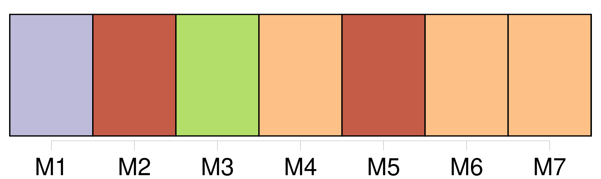
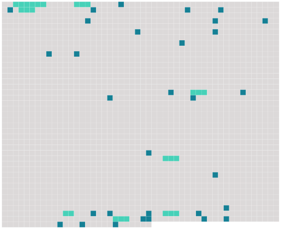

Longueur nb maillons : 39 mentions |
 |
LA RELIQUE
XXX J'ai recours à [toi] , [mon vieux camarade] , dans l'embarras où je me trouve ; car [tu] peux me tirer d'affaire. [1 phrases] [Tu] connais Gilberte, ou plutôt [tu] crois la connaître ; mais connaît -on jamais les femmes?? [2 phrases]
Je n'ai pas à [t'] apprendre que ta cousine est religieuse à l'extrême, élevée par les Dames blanches ou noires de Nancy. Cela, [tu] le sais mieux que moi. Ce que [tu] ignores, sans doute, c'est qu'elle est exaltée en tout comme en dévotion. [1 phrases] comme [tu] sais ; et charmeuse plus qu'on ne peut dire...
et comme [tu] ne sauras jamais. [5 phrases]
prends garde aux vendredis : je [t'] assure qu'ils sont funestes! [2 phrases] Il faut découvrir ce qui me fera le plus de plaisir, entendez [-vous] ?? Je verrai si [vous] avez de l'imagination. [20 phrases] Je n'ai, [tu] le sais, [mon cher abbé] , qu'une foi moyenne ; [tu] as la grandeur d'âme, l'amitié, de tolérer ma froideur, et de me laisser libre, attendant l'avenir, dis [-tu] ; mais je suis absolument incrédule aux reliques des brocanteurs en piété ; et [tu] partages mes doutes absolus à cet égard. [36 phrases] [Remarque] ceci : J'avais commis, pour elle, un sacrilège. [2 phrases]
Telle est la femme, [mon cher abbé] , toute la femme. [6 phrases] Je n'ai pas besoin de [te] dire que je n'ai pas vu la cathédrale à l'intérieur. [16 phrases] Ne pourrais [-tu] me recommander à quelque monsignor, ou seulement à quelque prélat français, propriétaire de fragments d'une sainte??
[Toi -même] , n'aurais [-tu] pas en [tes] collections le précieux objet réclamé?
[Sauve] -moi, [mon cher abbé] , et je [te] promets de me convertir dix ans plus tôt! [1 phrases]
»
Je [t'] en supplie, [fais] qu'elle ne soit pas la onze mille et unième.
Pardonne, je suis indigne ; mais je [t'] embrasse et je [t'] aime de tout coeur.
[Ton] vieil ami, |
 |
Il est possible de télécharger la ressource sur la page Ortolang |
Si vous avez des questions ou vous voyez des erreurs, merci d'envoyer un mail à silvia.federzoni89@gmail.com |